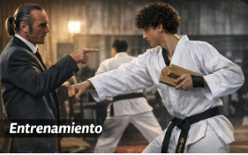
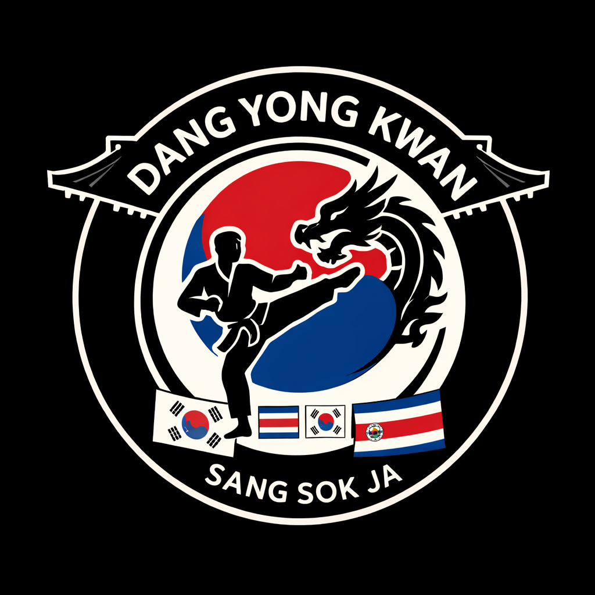
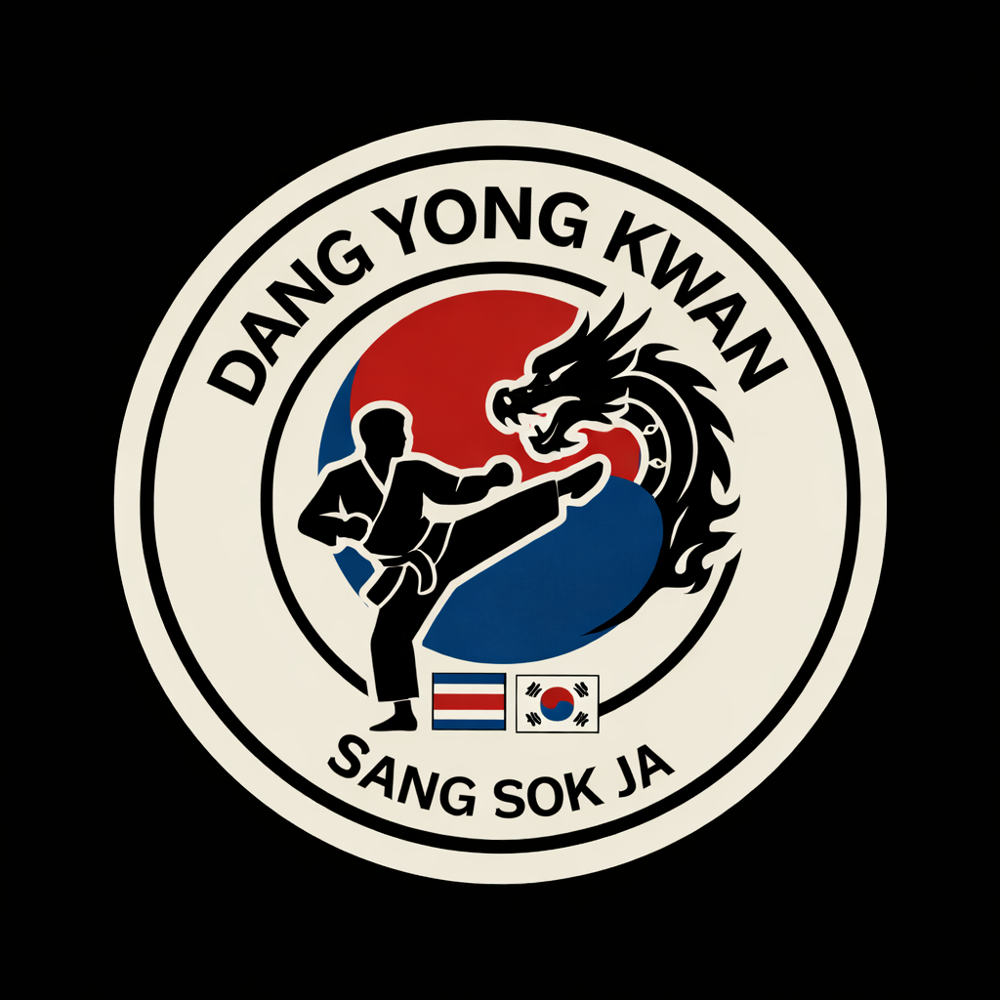

Nuestro mundo
Galería de entrenamiento
Combate

Entrenamiento
Técnica
Todas las edades
Condición física


Atenas · WTFDang Yong Kwan Sang Sok Ja es una academia de Taekwondo con presencia en Cartago y Atenas, Costa Rica. Fundada con la misión de transformar vidas a través de las artes marciales, formamos a niños, jóvenes y adultos en los valores del Taekwondo tradicional y olímpico.
Bajo la dirección del Maestro Sang Sok Ja, nuestra academia ofrece un ambiente disciplinado, respetuoso y motivador donde cada estudiante puede alcanzar su máximo potencial.
International Taekwondo Federation · Sede Cartago
El estilo ITF profundiza en la técnica clásica, los patrones (tul) y la defensa personal real. Con énfasis en la formación del carácter y la disciplina marcial, es perfecto para quienes buscan el arte marcial en su sentido más puro.
World Taekwondo Federation · Sede Atenas
El estilo WTF es el Taekwondo olímpico, reconocido mundialmente por su dinamismo y combate emocionante. Enfocado en la competencia nacional e internacional, desarrolla velocidad, potencia y espíritu atlético.
Desarrolla concentración, autocontrol y claridad mental. El tatami enseña a superar cualquier obstáculo.
Mejora resistencia, flexibilidad, velocidad y coordinación con entrenamientos de alto nivel.
Aprende técnicas reales y efectivas que te darán seguridad y confianza en tu día a día.
Construye autoestima sólida basada en el esfuerzo y el respeto mutuo dentro y fuera del tatami.

Escríbenos por WhatsApp y te damos toda la información sobre horarios, costos y cómo inscribirte. ¡La primera clase cambia todo!